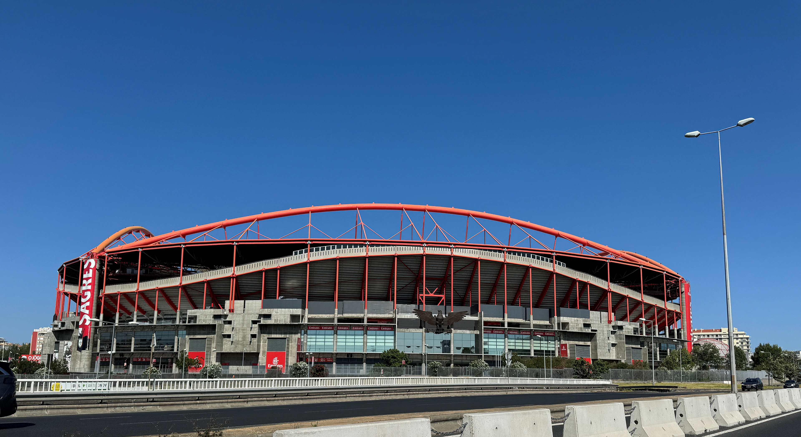
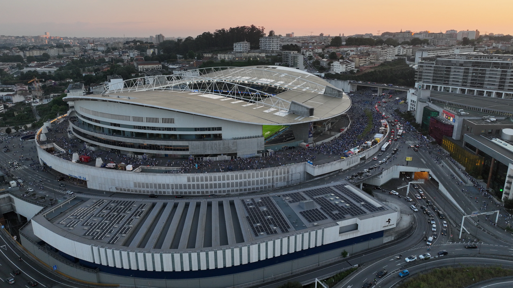
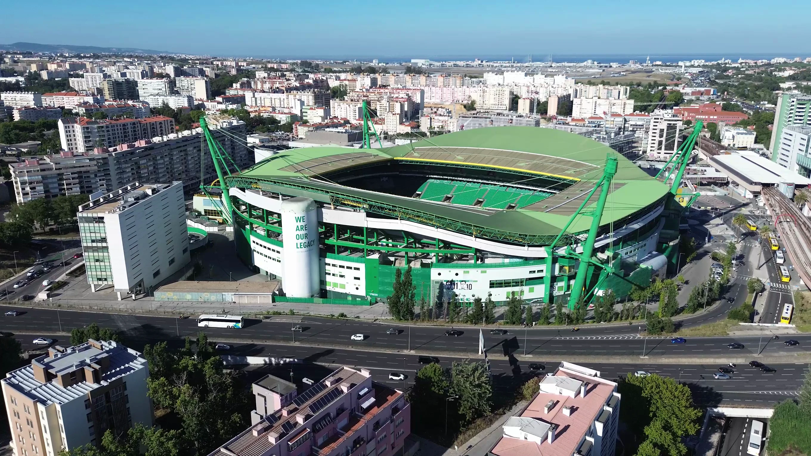

PORTUGAL

Luz Stadium
Estádio da Luz, located in Lisbon, is the home of SL Benfica and can accommodate 64,642 spectators. Inaugurated on 25 October 2003, this modern stadium cost €162 million to build. It is famous for its bright and transparent architecture, designed by HOK Sport (now Populous). Notable events that have taken place there include the UEFA Euro 2004 final and the UEFA Champions League finals in 2014 and 2020. The stadium is a true gem for football fans and a symbol of sporting excellence in Portugal.

Dragon Stadium
The Estádio do Dragão, located in Porto, is the home stadium of FC Porto and can accommodate 50,033 spectators. Opened on 16 November 2003, it cost 98 million euros to build. Designed by Portuguese architect Manuel Salgado, this stadium is known for its modern and elegant design. It has hosted major events such as the UEFA Euro 2004 opening match and the UEFA Champions League final in 2021. In addition to football matches, the Estádio do Dragão has also been the venue for concerts by famous bands such as the Rolling Stones and Coldplay.

Jose Alvalade Stadium
Estádio José Alvalade, also located in Lisbon, is the home of Sporting CP and can seat 50,095 spectators. Inaugurated on 6 August 2003, the stadium cost €105 million to build. Designed by Tomás Taveira, it is part of a multifunctional complex that includes a shopping centre, a cinema and the Sporting CP museum. Notable events include five UEFA Euro 2004 matches and the UEFA Cup final in 2005. The stadium is an iconic venue for football fans and an example of modern sports architecture in Portugal.